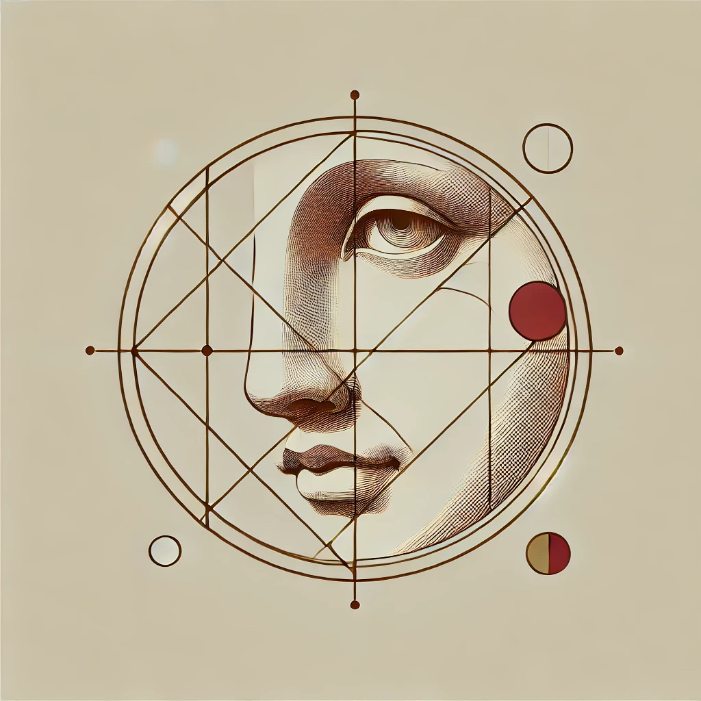

朱祉琪 (Zhiqi Zhu)
|  | Second year Master student |
About me
I am currently (i.e. 2026 Fall) a graduate student at Universität Duisburg-Essen (Germany, M2), last year I studied at Università di Padova (Italy, M1). I'm participating in the program called ALGANT (full scholarship). Information for ALGANT master's students at Padova is HERE, and for Essen is HERE.
I got my undergraduate degree in B.Sc under the supervision of Prof. Shanwen Wang at China. I was also a visiting research student in BICMR, Peking University, and graduated from the program Enhanced Program for Graduate Study there.
My research area is number theory, in particular the representation theory, trace formula and automorphic forms. [Bump's Book] led me into this field.
I am also studying algebraic geometry/topology, as they offer the necessary language and more perspectives.
Preprints
[i] Parameters and theta lifts (with Zhe Li and Shanwen Wang), pdf, 2025.
[Notes]
[Attended mini courses/seminars]
[Fun]

[Number Theory Conferences, new and old]